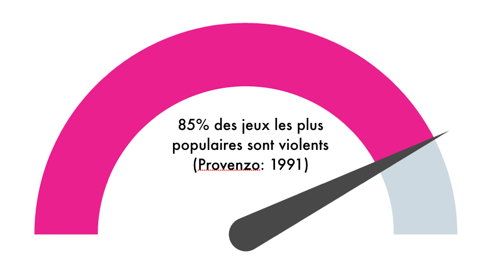
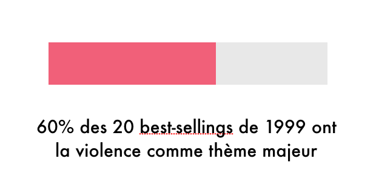
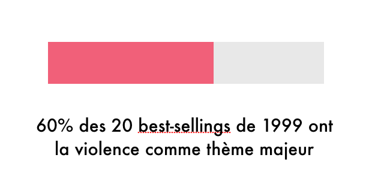

GTA : le jeu est-il violent ?

Grand Theft Auto, ou le crime devenu jeu
Grand Theft Auto annonce la couleur dès la sortie du premier volet, en 1997. Comme le titre l’indique, il s’agit surtout de voler des voitures, puisque le jeu incarne un malfrat qui grimpe les marches du grand banditisme dans une ville opportunément baptisée “Liberty City”, où le joueur peut se promener, frapper des passants, voler tous les véhicules qu’il voit, écraser des piétons, mitrailler des foules, en laissant derrière lui des pixels baignant dans le sang.
Il est même récompensé pour ces méfaits, car si GTA propose un scénario, une grande partie de l’intérêt du jeu réside dans les virées folles que l’ont peut réaliser au travers de la ville, en détruisant et en tuant en totale liberté tout ce qui apparaît dans notre champ de vision. Le joueur peut ainsi s’amuser à payer une prostituée puis à l’assassiner pour récupérer son argent, ou à voler une voiture, tuer son occupant, et rouler sur le trottoir pour renverser le plus de passants possible pour finalement se confronter à la police armé de lances-roquettes et de fusils mitrailleurs ; le passage à la 3D avec le troisième volet de la série n’a fait que démultiplier les possibles, avec toujours plus de liberté d’action au centre d’une ville dont la violence est exacerbée.
Les polémiques qui ont entouré le jeu ont été très vives, et son succès a contribué de manière conséquente à l’animation du débat autour de la violence dans les jeux vidéo. Car ces derniers sont souvent violents, de manière plus ou moins forte et explicite. Violents dans leurs mécanismes et leurs règles, en se basant fréquemment sur des actions meurtrières envers l’ennemi, ainsi que dans leurs représentations, allant dans certains cas extrêmes à verser dans le gore le plus brutal.
Et même si l’esthétique du meurtre n’est pas au coeur de GTA, l’approche réaliste et contextualisée de son univers provoque un malaise chez de nombreux observateurs qui relève d’une part d’une forme d’apologie du crime organisé et du grand banditisme de manière tout à fait frontale, plaçant les forces de l’ordre comme ennemis et obstacle du personnage principal qui doit par conséquent les éliminer, et d’autre part un ancrage dans la vie réelle plus déroutant que les fantasmes sanguinolents des jeux d’horreur. La violence exercée dans un cadre réaliste participe selon Serge Tisseron, psychanalyste, à brouiller les repères dans une dimension d’atteinte à la personne, à la recherche d’un “orgasme narcissique” qui passe par une mise à l’écart de la morale (Tisseron, 2011).
Naissance du problème : premières polémiques
Il est intéressant de constater que, parmi les trois jeux candidats au titre de “premier jeu vidéo”, Tennis for Two (1958), Spacewar! ( 1962) et Pong (Atari, 1972), le deuxième était déjà fondé sur une condition de victoire violente, à savoir pulvériser le vaisseau adverse. Il s’agit malgré tout d’une destruction très abstraite et peu soulignée par le jeu, encore rudimentaire.
C’est en 1976 qu’éclate la première polémique autour de la violence vidéoludique, avec Death Race (1976, Exidy) un jeu inspiré du film Death Race 2000, qui propose au joueur une expérience de mort et de vitesse incarnée par une course dont le but n’est non pas d’éviter le décor mais au contraire d’écraser le plus grand nombre de piétons possibles. Le jeu est mal reçu, qualifié de “malade, perfide, morbide” par le National Safety Council, alors que le film sort sans provoquer de remous (Blanchet, 2008). Alexis Blanchet fait un parallèle avec les films de gangsters du début des années 30, avant qu’une régulation morale ne soit mise en place, qui ont concentré l’ire des ligues de vertu tout comme Death Race a pu à son époque catalyser les critiques des moralisateurs contemporains en l’absence de processus de censure permettant de restreindre la circulation d’un objet perçu comme problématique et nocif.

Cet épisode n’était qu’un début, la naissance de la controverse majeure du jeu vidéo, alimentée par la dissonance importante entre l’appréciation du média et de ses codes par les joueurs et la perception externe des observateurs. Car si le gamer accueille sans broncher, par habitude et éducation, une esthétique gore et des mécanismes de jeu courants et largement acceptés par les joueurs, le parent ou l’adulte jettent un regard inquiet à un passe-temps qui permet à l’adolescent de commettre un véritable carnage du fond du canapé familial.
La violence comme outil de communication
If you want juice, money, power, ratings, use violence because violence sells.
La violence est un composant central de l’industrie du jeu vidéo, un levier de communication dont la portée est démultipliée par les attaques portées à son encontre. Elle choque, et fait ainsi parler d’elle : une mauvaise publicité vaut mieux que pas de publicité du tout.
Studio emblématique de cette stratégie marketing, Sega introduit dès les années 90 un nouveau degré de violence dans son positionnement ; car si ce n’est pas un moteur de vente auprès de tout le monde, c’est est un pour les jeunes hommes et jeunes adolescents. Sega construit cette image en contradiction avec celle de Nintendo, davantage perçu comme familial, voire infantile. Il représente l’adolescence, la violence, l’action, thème que nous retrouvons dans la signature sonore du “cri Sega”.
Mortal Kombat (1992, Midway) est emblématique de ce positionnement. C’est un jeu de combat somme toute classique, fortement inspiré de son prédécesseur Street Fighter II, auquel les développeurs ajoutent une touche personnelle. Ils se saisissent d’une occasion, du temps mort qui s’installe à la fin de chaque combat, après plusieurs minutes intenses d’action, pour ajouter une fin paroxystique, les fatalities. Ainsi, chaque personnage peut achever son adversaire avec un dernier coup spectaculaire, grotesque et sanglant : lui arracher le coeur, le couper en deux, l’immoler par le feu… ce qui n’a pas manqué de marquer l’opinion, les images du jeu étant d’un grand réalisme pour l’époque : des acteurs ont en effet servi de modèles, leur image étant ensuite numérisée et intégrée dans le jeu sous forme de sprites.
“We wanted to put a big exclamation point at the end by letting the winner really rub his victory in the face of the loser. Once we saw the player reaction, the fact that they enjoyed it and were having fun, we knew it was a good idea”
Cette démonstration de gore, traitée de manière tout à fait ludique et banale par les joueurs, ne tarde pas à faire parler d’elle. Ses images servent de démonstration au sénateur démocrate Joseph Lieberman qui réunit en 1993 une conférence de presse animée par lui-même et Bob Keeshan alias Capt’n Kangaroo, animateur d’une émission pour enfants, pour parler du problème de la violence dans les jeux vidéo. Il diffuse des scènes de Mortal Kombat et de Night Trap, autre jeu estampillé Sega, et déclare devant l’audience médusée :
“We’re not talking Pac-Man or Space Invaders anymore [...] We’re talking about video games that glorify violence and teach children to enjoy inflicting the most gruesome forms of cruelty imaginable”
La polémique enfle : le jeu vidéo sur le banc des accusés
La liste des jeux controversés ne s’arrête pas là. Certains studios, comme Rockstar avec la série phare GTA, en font même leur spécialité. C’est le cas d’Id Software, qui lance Wolfstein 3D en 1992 et Doom en 1993 ; le premier met en scène un rescapé de camp de concentration qui pénètre dans le bunker d’Hitler et massacre tous ses occupants, le deuxième une invasion de créatures démoniaques armées de lance-missiles et de pistolets laser. Ces jeux rencontrent un succès immédiat et posent les bases du genre des First-Person Shooters, qui conserveront les mêmes mécanismes jusqu’à nos jours ainsi que, bien souvent, le même goût pour les morts sanglantes et les cadavres qui s’empilent.
La popularité de ces jeux les porte aux yeux du grand public, et par là même aux yeux des politiques. La même année que la conférence de presse du sénateur Lieberman, l’état californien requiert des vendeurs de jeux vidéo de mettre les jeux déclarés violents hors de portée des mineurs et permet aux victimes d’agressions de poursuivre les développeurs en justice s’il est établi que le jeu est directement responsable de l’attaque (Klin). En France, Jean-Pierre Chevènement évoque le 9 mars 1998 à l’occasion d’un conseil de sécurité contre les violences urbaines de “jeunes sauvageons qui vivent dans le virtuel”, faisant écho à la condamnation de GTA par le Syndicat général de Police (Mauco, 2011).
Le point culminant des controverses est atteint en 1999 avec les retombées de la tuerie de Colombine dans la région de Littleton, lorsque deux lycéens, Eric Harrisson et Dylan Kelbold, pénètrent dans leur établissement et abattent plusieurs de leurs camarades avant de se donner la mort. L’événement lui-même a eu un impact considérable sur l’opinion, et a débordé sur le débat de la violence dans les jeux vidéo lorsqu’il s’est avéré que les deux amis étaient friands du jeu Doom, l’un d’entre eux ayant été jusqu’à réaliser plusieurs mods encore disponibles aujourd’hui. Le jeu occupe par ailleurs une place importante dans l’imaginaire des deux garçons, comme on peut le voir dans le journal de Harrisson, rédigé peu de temps avant la tuerie :
“Everyone should be put to a test. An ULTIMATE DOOM test, see who can survive in an environment (sic.) using only smarts and military skills. Put them in a doom world. No authority, no refuge, no BS copout excuses. If you cant figure out the area of a triangle or what "cation" means, you die! if you cant take down a demon w/ a chainsaw or kill a hell prince w/ a shotgun, you die!”
Une controverse très médiatique
La tuerie du lycée Columbine présente un aspect intéressant, caractéristique du débat sur la violence dans les jeux vidéo. L’attention s’est ainsi portée successivement sur la législation du port d’arme puis sur le jeu vidéo, le premier point étant combattu bec et ongles par le puissant lobby de la NRA - comparativement, le jeu vidéo semble représenter une cible plus aisée. Est-ce pourtant bien le cas ? Car si de nombreux acteurs extérieurs se sont constitués en porteurs de la critique, l’industrie a rapidement organisé sa défense, de manière consciente ou non. La presse s’intéresse alors encore peu au jeu vidéo - à vrai dire, l’angle pour lequel optent les médias est bien souvent celui de la polémique, au travers des thèmes de la violence ou de l’addiction.
“Le traitement médiatique français des jeux vidéo entre 1999 et 2003 met en évidence les logiques de « reprise de l’information » et un désintérêt manifeste des journalistes pour les jeux vidéo en tant que tels dès lors qu’ils ne sont pas reliés à des problématiques plus larges. Sur France 2, l'émission Ça se discute du 17 janvier 2001, « Violence à l'école », ne traite pas directement du jeu vidéo, mais au cours du débat sur la violence à l'école, les jeux vidéo sont évoqués comme facteurs de violence des enfants.”
Un point souvent relevé est le traitement “de faveur” du média vidéoludique vis-à-vis d’autres représentations violentes, dont certaines sont tout aussi graphiques, voire plus. Lorsque Death Race est épinglé pour la mise en scène de meurtres routiers, le film qui l’inspire n’est pas inquiété - certes en partie parce qu’il était diffusé de manière plus restreinte, étant noté “R” aux Etats-Unis, mais d’autres exemples cinématographiques de l’époque mettent en scène des images d’une grande violence alors que Death Race en propose qu’une représentation graphique très abstraite et rudimentaire de l’acte. Alexis Blanchet souligne en 2008 le poids de l’interaction dans cette force d’impression : le jeu propose de s’installer dans une borne d’arcade qui reproduit l’habitacle d’une voiture, avec volant et pédales, et rend ainsi le joueur acteur et non plus spectateur de sa violence. Kline évoque une continuité des représentations violentes, de la littérature aux films d’horreur en passant par la musique, que le jeu vidéo ne fait qu’augmenter tout en proposant une violence photoréaliste de plus en plus détaillée et vivante.
Divergences d’opinion : le jeu vidéo est-il violent ?
Une étude publiée en 2015 (Sparrow, Harrison, Oakley, Keogh, 2015) souligne la division de la communauté scientifique sur le sujet de l’impact des jeux vidéo. Deux camps s’opposent : ceux qui voient dans les jeux vidéo une influence néfastes pour les jeunes joueurs, et ceux qui au contraire considèrent qu’aucun impact ne peut être observé ; tous deux se fondent sur une littérature scientifique qui soutient leur propre propos. Le débat, loin d’être tranché, a pourtant trouvé une conclusion claire pour ce qui est de l’industrie, qui a adopté une position systématiquement défensive face à des attaques vraisemblablement très nocives pour le commerce du jeu vidéo tout comme pour la reconnaissance du travail et des oeuvres ainsi produites.
Puisque le jeu vidéo est longtemps au centre de discours de dénonciation avant tout (Rufat, Minassian, Jv comme objet de recherche), ses défenseurs se positionnent sur le même terrain en commençant par réfuter sa prétendue nocuité. Les frères Le Diberder, producteurs français, publient ainsi un premier livre en 1993 intitulé Qui a peur des jeux vidéo ? réédité et complété en 1998. La nouvelle édition, L'Univers des jeux vidéo, compte une importante partie qui porte sur les pathologies et problèmes liés aux jeux vidéo, sur près de quatre-vingt pages, soit près d’un tiers du livre.
La violence des jeux vidéo tend cependant à être démontrée par plusieurs études consécutives sur les titres les plus populaires. Dans une étude de Provenzo en 1991, 85% des titres les plus vendus sont considérés comme violents ; sur les 20 best-sellers de 1999, 60% donnent une place majeure à des actes de violence.

 

La question centrale demeure cependant : les jeux vidéos les plus populaires du tournant des années 2000 sont certes violents pour la plupart, mais peuvent-ils avoir un effet sur les joueurs ? C’est sur ce points crucial que divergent les avis. Pour Shackleford et Gentile, l’influence des jeux est réelle, et donc leur pratique devrait être davantage encadrée. Perron répond que l’usage de la violence est tout simplement lié à la mise en oeuvre d’émotions spécifiques à l’action :
« Les notions de contrôle (ou la perte de celui-ci) et d’action sont au cœur de l’expérience du jeu vidéo. On comprend alors pourquoi la peur demeure l’émotion vidéoludique la plus exploitée. Elle est clairement orientée vers un objet et vers un but. C’est une émotion primaire et prototypique qui a une forte tendance à l’action »
Ferguson fait la synthèse des deux courants qui s’opposent : la social learning theory, qui suggère que les jeux vidéos violents stimulent l’agressivité des joueurs, tandis que la catharsis theory postule l’effet contraire, une canalisation de pulsions agressives ayant des effets positifs sur le sujet. Pour le chercheur, aucun consensus ne se dégage pour l’instant quant au caractère nocif des jeux, ce qui le pousse à retenir l’aspect positif et cathartique de leur pratique, position retenue par l’industrie dans son ensemble.